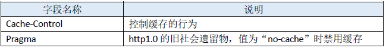
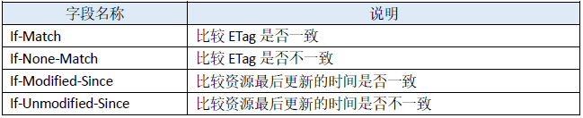
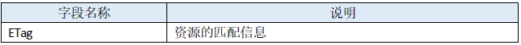
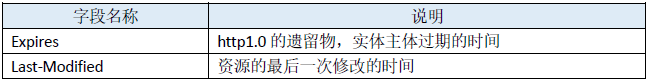
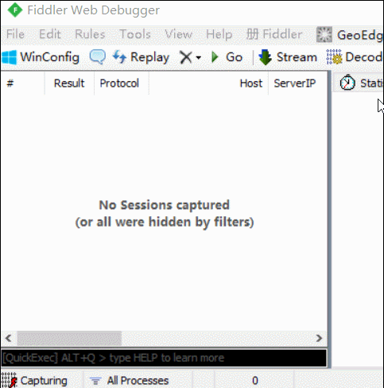
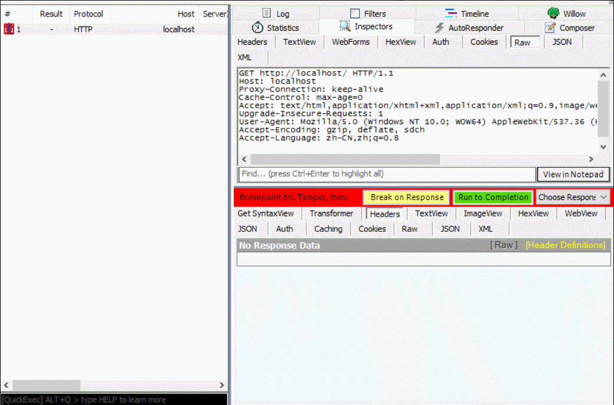
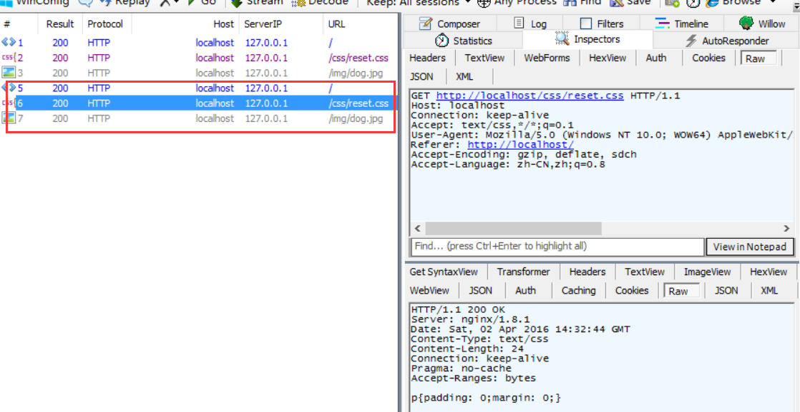
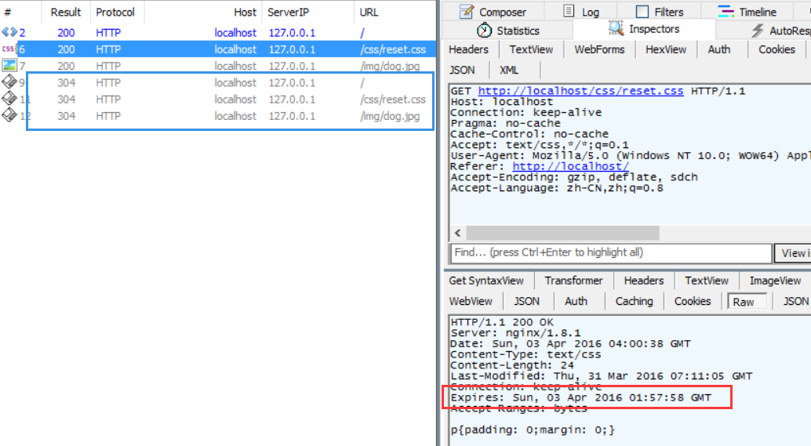

HTTP 知识点总结
参考web技术文档之HTTP资料
1 简单的概述
HTTP是一种能够获取如HTML这样网络资源的协议。它是Web上数据交换的基础，是一种client-server协议，也就是说请求通常是由像浏览器这样的接受方发起的。一个完整的web文档是由不同的子文档重新组建而成的，像是文本、布局描述、图片、视频、脚本等等。 客户端和服务端通过交换各自的消息（与数据流正好相反）来进行交互。通常由像浏览器这样的客户端发出的消息叫做 requests，那么被服务端回应的消息就叫做 responses。 HTTP被设计于上20世纪90年代初期，是一种可扩展性的协议。它是应用层的协议，虽然理论上它可以通过任何可靠的传输协议来发送，但是它还是通过TCP，或者是TLS－加密的TCP连接来发送。因为它很好的扩展性，时至今日它不仅被用来传输超文本文档，还用来传输图片、视频或者向服务器发送如HTML表单这样的信息。HTTP还可以根据网页需求，来获取部分web文档的内容来更新网页。
1.1 客户端：user-agent
严格意义来说，user-agent就是任何能够表现出用户一半行为的工具。但实际上，这个角色通常都是由浏览器来扮演。 对于发起请求来说，浏览器总是作为发起一个请求的实体，而永远不是服务器（虽然一些机制已经能够模拟服务器发起请求的消息了）。 要渲染出一个网页，浏览器首先要发送第一个请求来获取这个页面的HTML文档，再解析它并根据文档中的资源信息发送其他的请求来获取脚本信息，或者CSS来进行页面布局渲染，还有一些其它的页面资源（如图片和视频等）。然后，它把这些资源结合到一起，展现出来一个完整的文档，也就是网页。打开一个网页后，浏览器还可以根据脚本内容来获取更多的资源来更新网页。 一个网页就是一个超文本文档，也就是说有一部分显示的文本可能是链接，启动它（通常是鼠标的点击）就可以获取一个新的网页。网页使得用户可以控制它的user-agent来导航Web。浏览器来负责翻译HTTP请求的命令，并翻译HTTP的返回消息让用户能明白返回消息的内容。
1.2 Web服务端
在上述通信过程的另一端，就是一个Web Server来服务并提供客户端请求的文档。Server只是虚拟意义上：它可以是许多共同分担负载（负载平衡）的一组服务器组成的计算机群，也可以是一种复杂的软件，通过向其他计算机发起请求来获取部分或全部资源的软件。 Server不再只是一个单独的机器，它可以是在同一个机器上装载的许多服务之一。在HTTP/1.1和Host头部中，它们甚至可以共享同一个IP地址。
1.3 Proxies
在浏览器和服务器之间，有许多计算机和其他设备转发了HTTP的消息。因为Web栈层次结构的原因，它们大多数都出现在传输层、网络层和物理层上，对于HTTP的应用层来说就是透明的（虽然它们可能会对应用层的性能有重要影响）。而还有一部分表现在应用层上的，就叫做proxies了。Proxies既可以表现得透明，又可以不透明（看请求是否通过它们），主要表现在这几个功能上：
缓存（可以是公开的或是私有的，像浏览器的缓存）;
过滤（像反病毒扫描，家长监护）;
负载均衡，让多个服务器服务不同的请求;
对不同资源的权限控制;
登陆，允许存储历史信息;
2 HTTP 的基本性质
2.1 HTTP 是简单的
即便在HTTP/2中把HTTP消息封装到了frames中，HTTP大体上还是被设计成可读的而且简单的。HTTP的消息能够让人读懂且明白它的意思，还允许简单的测试，放低了门槛，更有利于新来者了解。
2.2 HTTP 是可扩展的
在HTTP/1中就出现了, HTTP headers让协议扩展变得非常容易。只要服务端和客户端在新的headers上语义达成一致，新的功能就可以轻松地被加进来。
2.3 HTTP 是无状态，有会话的
HTTP是无状态的：在同一个连接中，两个成功执行的请求之间是没有关系的。这就带来了一个问题，用户没办法在一个网站进行连续的交互，比如在一个电商网站里，用户把某个商品加入了购物车中，换了一个页面后再次添加商品，两次添加商品的请求没有联系，浏览器无法知道最终用户都选择了哪些商品。而用HTTP的头部扩展，HTTP Cookies就可以解决这个问题。把Cookies添加到头部中，创建一个会话来让每次请求都能共享相同的上下文信息，相同的状态。 而HTTP的核心是无状态的，cookies的使用可以创建有状态的会话。
2.4 HTTP 和连接
一个连接是由传输层来控制的，基本不属于HTTP的范围内。然而HTTP并不需要下面传输层的协议是面向连接的，它只需要它是可靠的，就是说不能丢失消息（至少没有错误）。在因特网两个最常用的传输层协议中，TCP是可靠的，而UDP不是。因此，HTTP依赖于TCP进行消息传递，虽然TCP是面向连接的，但这并不是必须的。 HTTP/1.0曾经为每一个请求/回应交换都打开一个TCP连接，导致了2个缺点：打开一个连接需要多次的消息往返因此很慢。但是当多个消息周期性的发送时，这就变得更加高效：暖连接比冷连接更高效。 为了减少这些负担，HTTP/1.1引入了流水线的概念（已被证明很难实现）和持久连接的概念：下层的TCP连接可以通过Connection头部来被部分地控制。HTTP/2则发展的更多，通过一个连接多个消息的方式来让这个连接始终保持为暖连接。 为了更好的适合HTTP，设计一种更好的传输层协议就一直在进行中。Google就研发了一种以UDP为基础，能提供更可靠更有效传输层协议的QUIC。
3 HTTP 能控制什么
多年以来，HTTP良好的扩展性控制着越来越多Web的功能。缓存和认证方式很早就可以由HTTP来控制了。另一方面，对同源同域的限制到2010年才有所改变。 下面就是可以用HTTP来控制的常见特性。 (1)缓存 文档怎么缓存能够通过HTTP来控制。服务端能告诉代理和客户端什么需要被缓存，缓存多久，而客户端能够命令中间缓存代理来忽略存储的文档。 (2)开放同源限制 为了防止网络窥听和其它的隐私泄漏，浏览器强制对Web网站做了分割限制。只有来自于相同来源的网页才能够获取网站的全部信息。这样的限制有时反而成了负担，HTTP可以通过修改头部来开放这样的限制，因此web文档可以是由不同域下的信息拼接成的（在某些情况下，这样做还有安全因素考虑在里面）。 (3)认证 一些页面能够被保护起来，仅让特定的用户进行访问。基本的认证功能可以直接通过HTTP提供，使用Authenticate相似的头部就可以，或者用HTTP cookies来设定指定的会话。 (4)代理 服务端和客户端通常都处在内部网上，彼此的真实地址都是不可见隐藏的。HTTP请求就要通过代理穿过网络障碍。不是所有的代理都是HTTP代理的，像一些用SOCKS协议的代理就运作在更底层（一些其它的协议，像ftp也能够被它们处理） (5)会话 Cookies用一个服务端的状态连接起了每一个请求。这就创建了会话，虽然基本的HTTP是无状态协议。这很有用，不仅是因为能用到购物车这样的电商业务上，更是因为，它使得任何网站都能够配置页面展现的东西了。
4 HTTP 流
当客户端想要和服务端进行信息交互时（服务端是指作为最终的服务器，或者是作为中间代理），过程表现为下面的几步： (1)打开一个TCP连接（或者重用之前的一个）：TCP连接用来发送一条或多条请求，当然也用来接受回应消息。客户端可能重用一个已经存在的连接，或者也可能重开几个新的与服务端的TCP连接。 (2)发送一个HTTP报文：HTTP报文（在HTTP/2之前）是语义可读的。在HTTP/2中，这些简单的消息被封装在了帧中，这使得报文不可能被直接读出来，但是规则仍旧是相同的。
GET / HTTP/1.1 Host: developer.mozilla.org Accept-Language: fr(3)读取服务端返回的报文：
HTTP/1.1 200 OK Date: Sat, 09 Oct 2010 14:28:02 GMT Server: Apache Last-Modified: Tue, 01 Dec 2009 20:18:22 GMT ETag: "51142bc1-7449-479b075b2891b" Accept-Ranges: bytes Content-Length: 29769 Content-Type: text/html <!DOCTYPE html... (here comes the 29769 bytes of the requested web page)(4)关闭连接或者为以后的请求重用连接。 当HTTP流水线启动时，请求都可以不用等待第一个请求的成功回应就被发送。然而HTTP流水线已经被证明很难在现有的网络中实现，因为现有的网络中有很多老旧的软件与现代版本的软件共存。因此HTTP流水线已经被在有多请求下表现得更稳健的HTTP/2的帧所取代。
5 HTTP 报文
HTTP/1.1和更早的HTTP报文都是语义可读的。在HTTP/2中，这些报文被嵌入到了一个新的二进制结构中－帧。帧可以允许实现很多优化，如复用和报文头部的压缩。即使只有原始HTTP报文的一部分以这种HTTP/2版本的方式发送出来，每个报文的语义依旧不变，客户端会重组原始的HTTP/1.1请求。因此用HTTP/1.1格式来考虑HTTP/2报文仍旧很有效。 有两种HTTP报文的类型，请求与回应。
5.1 请求
HTTP请求的一个例子：
 请求由下面的元素组成：
(1)一个HTTP的method，经常是由一个动词像GET, POST 或者一个名词像OPTIONS，HEAD来定义客户端的动作行为的。通常客户端的操作都是获取资源（用GET方法）或者发送一个HTML form表单的值（用POST方法），虽然在一些情况下也会有其他的操作。
(2)要获取的资源的路径，通常是上下文中就很明显的元素资源的URL，它没有protocol （http://），domain（developer.mozilla.org），或是TCP的port（HTTP是80端口）
(3)HTTP协议的版本号
(4)为服务端表达其他信息的可选择性的headers
(5)对于一些像POST这样的方法，报文的body就包含了发送的资源，这个body与回应报文的body类似。
请求由下面的元素组成：
(1)一个HTTP的method，经常是由一个动词像GET, POST 或者一个名词像OPTIONS，HEAD来定义客户端的动作行为的。通常客户端的操作都是获取资源（用GET方法）或者发送一个HTML form表单的值（用POST方法），虽然在一些情况下也会有其他的操作。
(2)要获取的资源的路径，通常是上下文中就很明显的元素资源的URL，它没有protocol （http://），domain（developer.mozilla.org），或是TCP的port（HTTP是80端口）
(3)HTTP协议的版本号
(4)为服务端表达其他信息的可选择性的headers
(5)对于一些像POST这样的方法，报文的body就包含了发送的资源，这个body与回应报文的body类似。
5.2 回应
HTTP回应的一个例子：
 回应报文包含了下面的元素：
(1)HTTP的版本号。
(2)一个状态码（status code），来告知对应的请求发送成功或失败，以及失败的原因。
(3)一个状态信息，这个信息是非权威的状态码描述信息，也就是说可以由服务端自行设定的。
(4)HTTP headers，与请求的很像。
(5)可选的，但是比在请求报文中更加常见地包含获取资源的body。
回应报文包含了下面的元素：
(1)HTTP的版本号。
(2)一个状态码（status code），来告知对应的请求发送成功或失败，以及失败的原因。
(3)一个状态信息，这个信息是非权威的状态码描述信息，也就是说可以由服务端自行设定的。
(4)HTTP headers，与请求的很像。
(5)可选的，但是比在请求报文中更加常见地包含获取资源的body。
6 HTTP 缓存
6.1 http报文中与缓存相关的首部字段
我们先来瞅一眼RFC2616规定的47种http报文首部字段中与缓存相关的字段，事先了解一下能让咱在心里有个底： 1. 通用首部字段（就是请求报文和响应报文都能用上的字段）  2. 请求首部字段  3. 响应首部字段  4. 实体首部字段 
6.2 首部字段修改
有时候一些浏览器会自行给请求首部加上一些字段（如chrome使用F5会强制加上“cache-control:max-age=0”）,会覆盖掉一些字段（比如pragma）的功能；另外有时候我们希望服务器能多/少返回一些响应字段。 这种情况我们就希望可以手动来修改请求或响应报文上的内容了。那么如何实现呢？这里我们使用Fiddler来完成任务。 在Fiddler中我们可以通过“bpu XXX”指令来拦截指定请求，然后手动修改请求内容再发给服务器、修改响应内容再发给客户端。 以我们的example为例，页面文件走nginx通过 http://localhost/ 可直接访问，所以我们直接执行“bpu localhost”拦截所有地址中带有该字样的请求：  点击被拦截的请求，可以在右栏直接修改报文内容（上半区域是请求报文，下半区域是响应报文），点击黄色的“Break on Response”按钮可以执行下一步（把请求发给服务器），点击绿色的按钮“Run to Completion”可以直接完成整个请求过程： 
6.3 浏览器的强制策略
如上述，当下大多数浏览器在点击刷新按钮或按F5时会自行加上“Cache-Control:max-age=0”请求字段，所以我们先约定成俗——后文提及的“刷新”多指的是选中url地址栏并按回车键（这样不会被强行加上Cache-Control）。事实上有的浏览器还有一些更奇怪的行为，在后续我们回答文章开头问题的时候会提到。
7 石器时代的缓存方式
在 http1.0 时代，给客户端设定缓存方式可通过两个字段——“Pragma”和“Expires”来规范。虽然这两个字段早可抛弃，但为了做http协议的向下兼容，你还是可以看到很多网站依旧会带上这两个字段。
7.1 Pragma
当该字段值为“no-cache”的时候（事实上现在RFC中也仅标明该可选值），会知会客户端不要对该资源读缓存，即每次都得向服务器发一次请求才行。 Pragma属于通用首部字段，在客户端上使用时，常规要求我们往html上加上这段meta元标签（而且可能还得做些hack放到body后面去）：
<meta http-equiv="Pragma" content="no-cache">它告诉浏览器每次请求页面时都不要读缓存，都得往服务器发一次请求才行。 BUT!!! 事实上这种禁用缓存的形式用处很有限： 1. 仅有IE才能识别这段meta标签含义，其它主流浏览器仅能识别“Cache-Control: no-store”的meta标签 2. 在IE中识别到该meta标签含义，并不一定会在请求字段加上Pragma，但的确会让当前页面每次都发新请求（仅限页面，页面上的资源则不受影响）。 做了测试后发现也的确如此，这种客户端定义Pragma的形式基本没起到多少作用。  如上图红框部分是再次刷新页面时生成的请求，这说明禁用缓存生效，预计浏览器在收到服务器的Pragma字段后会对资源进行标记，禁用其缓存行为，进而后续每次刷新页面均能重新发出请求而不走缓存。
7.2 Expires
有了Pragma来禁用缓存，自然也需要有个东西来启用缓存和定义缓存时间，对http1.0而言，Expires就是做这件事的首部字段。 Expires的值对应一个GMT（格林尼治时间），比如“Mon, 22 Jul 2002 11:12:01 GMT”来告诉浏览器资源缓存过期时间，如果还没过该时间点则不发请求。 在客户端我们同样可以使用meta标签来知会IE（也仅有IE能识别）页面（同样也只对页面有效，对页面上的资源无效）缓存时间：
<meta http-equiv="expires" content="mon, 18 apr 2016 14:30:00 GMT">如果希望在IE下页面不走缓存，希望每次刷新页面都能发新请求，那么可以把“content”里的值写为“-1”或“0”。 注意的是该方式仅仅作为知会IE缓存时间的标记，你并不能在请求或响应报文中找到Expires字段。如果是在服务端报头返回Expires字段，则在任何浏览器中都能正确设置资源缓存的时间  那么如果Pragma和Expires一起上阵的话，听谁的？我们试一试就知道了：
 我们通过Pragma禁用缓存，又给Expires定义一个还未到期的时间（红框），刷新页面时发现均发起了新请求（蓝框），这意味着Pragma字段的优先级会更高。
BUT，响应报文中Expires所定义的缓存时间是相对服务器上的时间而言的，如果客户端上的时间跟服务器上的时间不一致（特别是用户修改了自己电脑的系统时间），那缓存时间可能就没啥意义了。
我们通过Pragma禁用缓存，又给Expires定义一个还未到期的时间（红框），刷新页面时发现均发起了新请求（蓝框），这意味着Pragma字段的优先级会更高。
BUT，响应报文中Expires所定义的缓存时间是相对服务器上的时间而言的，如果客户端上的时间跟服务器上的时间不一致（特别是用户修改了自己电脑的系统时间），那缓存时间可能就没啥意义了。